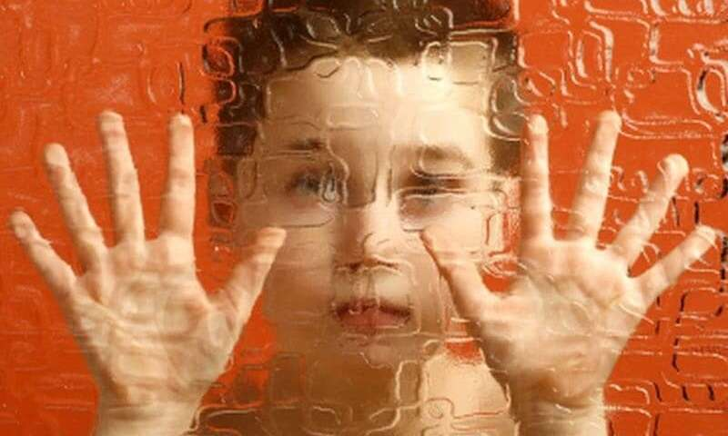
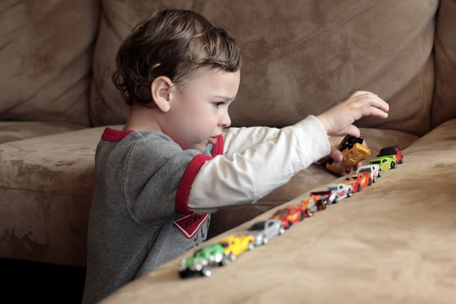

SYMPTOMS
Social Communication Challenges

Children and adults with autism have difficulty with verbal and non-verbal communication. For example, they may not understand or appropriately use:
- Spoken language (around a third of people with autism are nonverbal)
- Gestures
- Eye contact
- Facial expressions
- Tone of voice
- Expressions not meant to be taken literally
Social Challenges

Additional social challenges can include difficulty with:
- Recognizing emotions and intentions in others
- Recognizing one’s own emotions
- Expressing emotions
- Seeking emotional comfort from others
- Feeling overwhelmed in social situations
- Taking turns in conversation
- Gauging personal space (appropriate distance between people)
Restricted and repetitive behaviors

Restricted and repetitive behaviors vary greatly across the autism spectrum. They can include:
- Repetitive body movements (e.g. rocking, flapping, spinning, running back and forth)
- Repetitive motions with objects (e.g. spinning wheels, shaking sticks, flipping levers)
- Staring at lights or spinning objects
- Ritualistic behaviors (e.g. lining up objects, repeatedly touching objects in a set order)
- Narrow or extreme interests in specific topics
- Need for unvarying routine/resistance to change (e.g. same daily schedule, meal menu, clothes, route to school)